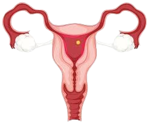
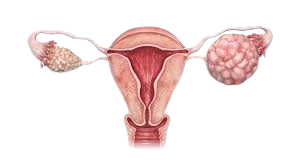

Deteksi Awal PCOS Secara Cepat & Mudah
Bantu kamu mengenali gejala PCOS lebih dini melalui chatbot berbasis AI di WhatsApp.
Mulai ChatbotTentang PCOS
(Polycystic Ovary Syndrome) adalah kondisi hormonal yang umum dialami wanita usia subur. Gejalanya bisa berupa haid tidak teratur, jerawat, dan pertumbuhan rambut berlebih. Deteksi dini penting agar bisa ditangani lebih baik.
Gejala PCOS
Haid tidak teratur, jerawat membandel, hingga rambut tumbuh berlebih bisa jadi tanda PCOS. Deteksi dini penting untuk mencegah komplikasi jangka panjang.

Diagnosis PCOS
Pemeriksaan hormon, USG, dan analisis siklus menstruasi diperlukan untuk memastikan diagnosis PCOS secara akurat.

Penanganan Sederhana
Cukup jawab pertanyaan via WhatsApp. Chatbot kami akan menganalisis kemungkinan PCOS menggunakan teknologi machine learning - cepat, aman, dan tanpa biaya.
